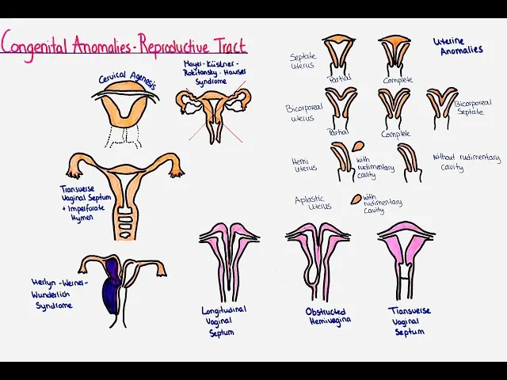
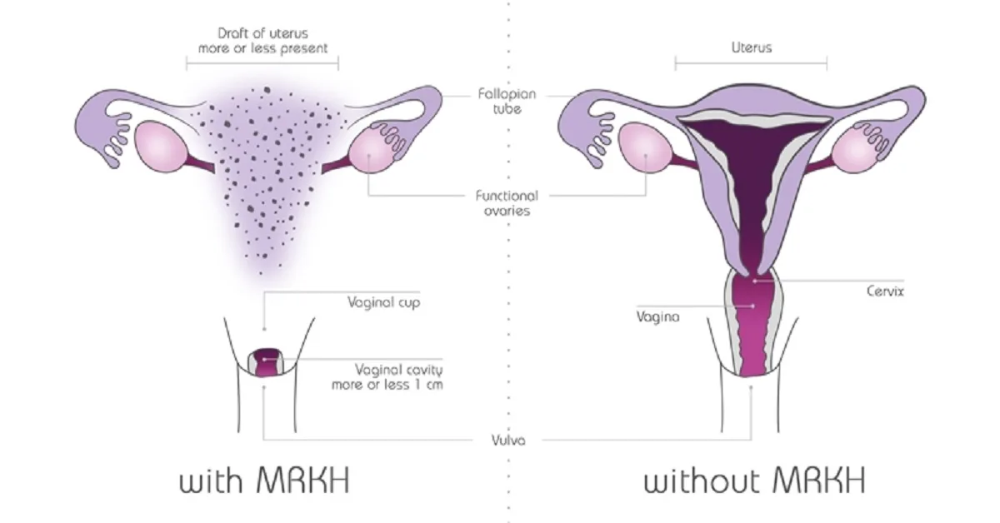
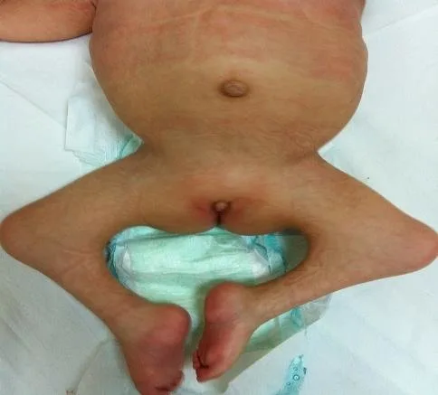
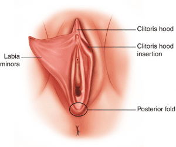
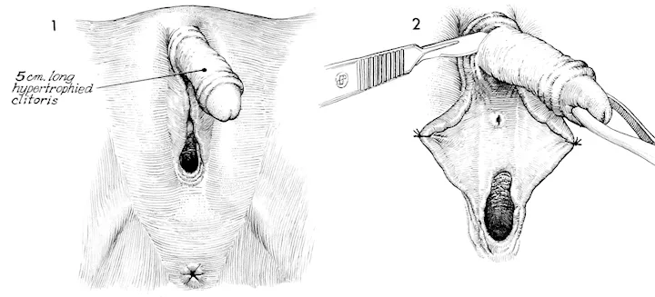
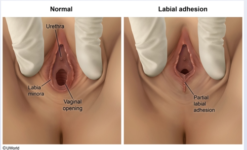
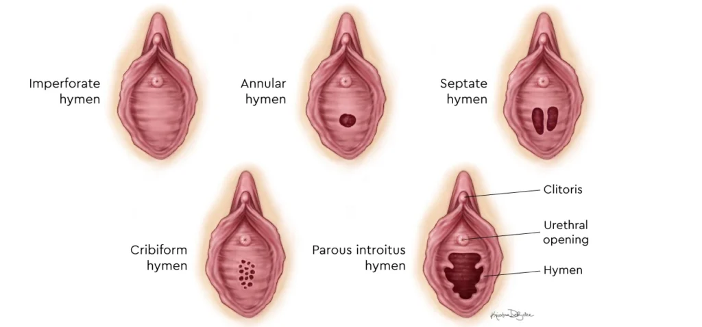
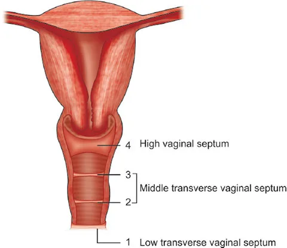

Expanded Nursing Uganda Explanation
Congenital abnormalities of the reproductive organs should be understood beyond a short definition. Link the concept to patient history, focused assessment, common risks, nursing priorities, documentation and evaluation of outcomes.
Contents, 15 sections (tap to expand)
01 CONGENITAL ANOMALIES OF THE FEMALE GENITAL ORGANS
These are developmental abnormalities of the reproductive female organs that occur intrauterine.
Congenital abnormalities of the female reproductive tract are developmental abnormalities in the reproductive organs that form in the embryo.
Congenital anomalies of the female genital tract result from genetic, environmental, or unknown factors. They can affect various parts of the reproductive system, including the uterus, vagina, cervix, ovaries, and external genitalia.
They result from issues in the embryological development of the Müllerian ducts , which are the precursors to the female reproductive organs.
The Müllerian ducts are two tubes present in the developing embryo. In females, these ducts develop into the fallopian tubes, uterus, cervix, and the upper part of the vagina. Normally, these ducts fuse to form a single uterine cavity and then undergo canalization (hollowing out) to form the fallopian tubes, uterus, and upper vagina.
They can also be referred to as;
- Uterine/vaginal anomalies
- Mullerian anomalies
- Mullerian duct anomalies
- Aplasia (agenesis)
02 Aetiology/Causes
The cause of these disruptions in embryonic development is usually not known.
- Genetic Factors : Inherited genetic mutations or chromosomal abnormalities. Turner syndrome (affects ovarian development), Androgen Insensitivity Syndrome (affects external genitalia development).
- Environmental Factors: Exposure to harmful substances during pregnancy. Medications like diethylstilbestrol(DES), infections (like rubella), and toxins.
- Unknown Factors : Sometimes, the exact cause is not known.
Mayer-Rokitansky-Küster-Hauser (MRKH) syndrome
Mayer-Rokitansky-Küster-Hauser (MRKH) syndrome is a disorder that occurs in females and mainly affects the reproductive system .
03 Anomalies of the Vulva
Labial Hypoplasia : Underdevelopment of the labia majora or minora, or both , resulting in smaller or absent labial structures. Labial hypoplasia is a harmless condition in which one or both sides of the labia don’t form normally during puberty. One side may be normal while the other side grows smaller or is absent. Can cause aesthetic concerns or discomfort, especially during activities like cycling or wearing tight clothing.
Management :
- Often no treatment is required unless associated with functional or aesthetic concerns, which can be addressed surgically.
Labial Hypertrophy : Overdevelopment or enlargement of the labia majora or minora . May cause discomfort, difficulty with hygiene, or self-consciousness.
Clinical Features:
- Enlarged labia, potentially causing discomfort, irritation, hygiene problems, difficulty with urination, or cosmetic concerns. May be asymmetric.
Management :
- Labiaplasty : Surgical reduction to achieve a more typical size.
- Conservative Management : Symptom management like use of padded undergarments.
Clitoral Hypertrophy : An unusually large clitoris . Size is relative and depends on age and other factors.
Clinical Features :
- Enlarged clitoris, possibly impacting urination, sexual function, or causing cosmetic concerns. Often associated with conditions like congenital adrenal hyperplasia (CAH).
Management :
- Observation, clitoroplasty (surgical reduction), hormonal therapy (if CAH is present), and psychological support are options depending on severity and associated conditions.
Fusion Anomalies : Abnormal fusion of the labia. This can range from mild to complete fusion.
- Labial adhesion : Fusion of the labia majora, sometimes extending to the labia minora.
- Clinical Features : Fused labia, creating an obstruction to the vaginal opening (introitus), potentially impacting urination, menstruation, and hygiene.
Management : Labiaplasty (surgical separation) is needed to create a normal vaginal opening.
04 Anomalies of the Hymen
Imperforate Hymen : Complete coverage of the vaginal opening by the hymen.
Symptoms (S/S) : Usually asymptomatic until menarche, then presents with;
- Cryptomenorrhea (hidden menstruation)
- Amenorrhea (primary).
- Severe abdominal or pelvic pain due to hematocolpos (accumulation of menstrual blood).
- Urinary retention or frequency.
- Constipation.
- A bulging hymen
- Back pain.
Management : Surgical hymenectomy to create a normal vaginal opening.
Microperforate Hymen: A very small opening in the hymen, resulting in limited menstrual flow. A small opening in the hymen, causing restricted menstrual flow.
Symptoms :
- May cause symptoms similar to imperforate hymen but less severe.
- Spotting, pain, and delayed complete menstrual evacuation.
Management : Minor surgical intervention to enlarge the opening.
Hymenal Variations : The hymen’s appearance varies widely among individuals, and these variations are generally considered normal unless they cause symptoms. The terms you’ve listed describe different shapes and structures:
- Annular Hymen : This is the most common type; it’s a circular or ring-like hymen with a central opening.
- Septate Hymen : The hymen has one or more bands of tissue dividing the opening, creating multiple smaller openings. This can sometimes interfere with menstrual flow or sexual intercourse. Pain during intercourse or tampon insertion, obstruction of menstrual flow.
- Cribiform Hymen : The hymen has multiple small openings, giving it a sieve-like appearance. This usually does not cause problems.
05 Anomalies of the Vagina
Transverse Vaginal Septum : Horizontal band of tissue partially or completely obstructing the vaginal canal.
- Symptoms : Primary amenorrhea, cyclic abdominal pain, and dyspareunia.
- Management : Surgical excision to restore vaginal patency.
Vertical or Complete Vaginal Septum : A vertical partition dividing the vaginal canal into two separate channels.
- Potential Effects : Dyspareunia, difficulty with tampon use, or complications in childbirth.
- Management : Surgical correction to remove the septum.
Vaginal Agenesis (Mayer-Rokitansky-Küster-Hauser (MRKH) Syndrome) : Absence of a vaginal canal, with a functioning uterus or absence thereof.
- Management : Surgical creation of a neovagina using techniques such as tissue grafting, balloon dilation, or bowel vaginoplasty.
- Use of vaginal dilators to create or maintain vaginal width.
Vaginal Atresia : Narrowing or closure of the vagina.
06 Anomalies of the Cervix
Cervical Agenesis : Absence of the cervix, leading to obstruction of menstrual flow and infertility.
- Clinical Features : Amenorrhea (absence of menstruation); infertility; Hematometra.
- Management : Management depends on the specific situation and may involve surgical reconstruction or assisted reproductive technologies (ART).
Cervical Hypoplasia : Underdevelopment of the cervix.
- Symptoms : Menstrual irregularities, or recurrent pregnancy losses, early onset of cervical incompetence (inability to support pregnancy), and potential fertility problems.
- Management : Depends on severity; fertility treatments or surgical correction may be considered. Cerclage (stitching the cervix) might be used in pregnancy.
Cervical Duplication : Presence of two cervical canals, often associated with uterine duplication.
- Potential Effects : Obstetric complications, such as difficulty during labor.
- Management : Surgical correction or monitoring during pregnancy.
07 Anomalies of the Uterus
Uterine Duplication: Two separate uterine cavities, each with its own cervix and, in rare cases, separate vaginas.
- Potential Effects : Menstrual irregularities, infertility, or recurrent miscarriages.
- Management : Surgical unification if symptomatic.
Unicornuate Uterus : Uterus formed from one Müllerian duct, resulting in a single uterine horn.
- Potential Effects : Increased risk of miscarriage, preterm labor, or infertility.
- Management : Monitoring during pregnancy or surgical interventions.
Septate Uterus : A fibrous or muscular septum dividing the uterine cavity.
- Symptoms : Infertility, recurrent pregnancy loss.
- Management : Hysteroscopic metroplasty to remove the septum.
Uterine Agenesis : Complete absence of the uterus, often part of MRKH syndrome.
Management :
- Neovaginal creation for sexual function.
- Gestational surrogacy for childbearing.
Arcuate Uterus : This is a variation rather than a true anomaly. The uterine cavity has a slightly indented fundus (top portion), giving it a heart-shaped appearance. The indentation is generally shallow. It’s often considered a normal variant and doesn’t usually cause problems with fertility or pregnancy.
Didelphys Uterus (Uterus Didelphys) : This is a complete duplication of the uterus, with two separate uterine horns , each having its own cervix and often its own vagina . Pregnancy complications, such as preterm birth and ectopic pregnancy, are more likely.
Bicornuate Uterus: This is characterized by a uterus with two horns that are partially fused . There’s a single cervix, but the uterine cavity is partially or completely divided . Similar to a didelphys uterus, there’s a higher chance of pregnancy complications, including miscarriage, preterm labor, and ectopic pregnancy.
08 Anomalies of the Fallopian Tubes
Fallopian Tube Agenesis : Absence of one or both fallopian tubes.
- Potential Effects : Infertility, depending on whether one tube is functional.
- Management : Assisted reproductive technologies like in vitro fertilization (IVF).
Accessory Fallopian Tubes : Presence of extra fallopian tubes, in addition to the normal pair.
- Potential Effects : Increased risk of ectopic pregnancy.
- Management : Surgical removal of accessory tubes.
Tubal Duplication : Presence of duplicated segments in fallopian tubes.
- Potential Effects : Infertility or ectopic pregnancies.
- Management : Corrective surgery.
Tubal Atresia : Underdevelopment or closure of one or more segments of the fallopian tubes.
- Potential Effects : Impaired egg transportation, leading to infertility.
- Management : Surgery or IVF.
(a) Types of Congenital Abnormalities of the Female Reproductive System:
1. Congenital Abnormalities of the Uterus:
- Septate uterus : A uterus with a septum dividing the cavity partially or completely.
- Bicornuate uterus : A uterus with two separate horns.
- Unicornuate uterus : A uterus with only one horn.
- Didelphys: A uterus with two separate cavities and two cervixes.
2. Congenital Abnormalities of the Vulva:
- Labial hypoplasia: Underdevelopment or small size of the labia.
- Labial hypertrophy : Overgrowth or excessive size of the labia.
3. Congenital Abnormalities of the Hymen:
- Imperforate hymen: A hymen that completely blocks the vaginal opening.
- Microperforate hymen : A hymen with a very small opening.
- Septate hymen : A hymen with a band of tissue dividing the opening.
4. Congenital Abnormalities of the Vagina:
- Transverse vaginal septum : A wall of tissue dividing the vagina horizontally.
- Vertical or complete vaginal septum : A complete blockage of the vagina.
- Vaginal agenesis : Absence or underdevelopment of the vagina.
5. Congenital Abnormalities of the Cervix:
- Cervical agenesis : Absence or underdevelopment of the cervix.
- Cervical duplication : Presence of two cervixes.
(b) Preventive Measures of Congenital Abnormalities:
- Genetic Counseling : Seek genetic counseling before planning a pregnancy to assess the risk of congenital abnormalities based on family history and genetic factors.
- Prenatal Care : Regular prenatal check-ups and screenings can help detect and manage any potential abnormalities early on.
- Avoidance of Teratogens: Avoid exposure to harmful substances, such as tobacco, alcohol, drugs, and certain medications, during pregnancy.
- Proper Nutrition: Maintain a balanced diet rich in essential nutrients, including folic acid, which can help prevent certain congenital abnormalities.
- Vaccinations : Ensure that you are up to date with recommended vaccinations to protect against infections that can cause fetal abnormalities.
- Environmental Safety: Take precautions to avoid exposure to environmental hazards, such as radiation, chemicals, and pollutants.
- Managing Chronic Conditions: Properly manage chronic conditions, such as diabetes or hypertension, before and during pregnancy to reduce the risk of congenital abnormalities.
- Genetic Testing: Consider genetic testing, such as carrier screening, to identify any potential genetic abnormalities before conception.
- Avoidance of Infections : Take measures to prevent infections during pregnancy, as certain infections can increase the risk of congenital abnormalities.
- Emotional Support: Seek emotional support and counseling to cope with stress and anxiety during pregnancy, as these factors can impact fetal development.
09 General Manifestation
- Primary amenorrhea: Absence of menstruation by the age of 16.
- Abnormal menstrual bleeding : Irregular or heavy menstrual bleeding.
- Pelvic pain: Chronic or cyclical pelvic pain
- Dyspareunia : Pain during sexual intercourse.
- Infertility : Difficulty conceiving or carrying a pregnancy to term.
- Recurrent miscarriages : Multiple pregnancy losses.
- Abnormal external genitalia : Unusual appearance or ambiguous genitalia.
- Urinary or bowel complaints : Symptoms such as urinary retention or bowel dysfunction.
- Mass or bulging in the vaginal area : Presence of a palpable mass or bulging membrane.
- Renal anomalies : Associated kidney abnormalities, such as unilateral agenesis or horseshoe kidney.
10 General Investigations for Congenital Abnormalities of the Female Reproductive System:
Medical History and Physical Examination :
- A detailed medical history, including family history.
- A thorough physical examination helps identify external genital abnormalities and assess the overall development of the reproductive organs.
Imaging Studies:
- Ultrasound: This non-invasive imaging technique uses sound waves to visualize the reproductive organs and detect any structural abnormalities.
- Magnetic Resonance Imaging (MRI): MRI provides detailed images of the reproductive organs and can help identify complex abnormalities.
Hormonal Testing:
- Hormone levels can be assessed through blood tests to evaluate the functioning of the reproductive system and identify any hormonal imbalances.
Genetic Testing:
- Genetic testing, such as karyotyping, can be performed to identify chromosomal abnormalities that may contribute to congenital reproductive system abnormalities.
Hysterosalpingogram (HSG):
- HSG is an X-ray procedure that involves injecting a contrast dye into the uterus and fallopian tubes to evaluate their structure and detect any blockages or abnormalities.
Laparoscopy:
- Laparoscopy is a minimally invasive surgical procedure that allows direct visualization of the reproductive organs using a small camera inserted through a small incision in the abdomen.
Biopsy:
- In some cases, a biopsy may be performed to obtain a tissue sample for further examination and to rule out any underlying pathology.
11 General Management
Multidisciplinary Approach :
- A multidisciplinary team consisting of gynecologists, pediatricians, geneticists, psychologists, nurses, and other specialists is often involved in the management of congenital abnormalities.
Surgical Interventions:
- Surgical correction may be necessary for certain congenital abnormalities, such as blockages in the vagina or uterus.
- The timing of surgery depends on the specific abnormality and the individual’s age and development.
- Surgical procedures may be performed in infancy or delayed until the individual reaches puberty and has started menstruating.
Dilator Therapy:
- For individuals born without a vagina, dilator therapy can be used to create a new vagina.
- This nonsurgical approach involves using a dilator to gradually stretch or widen the area where the vagina should be.
- Dilator therapy typically takes several months to achieve the desired outcome.
Hormonal Management:
- Hormonal therapy may be considered to regulate menstrual cycles, manage hormonal imbalances, or address associated conditions.
- Hormonal treatments can help alleviate symptoms such as menstrual pain or irregularities.
Emotional Support and Counseling:
- Coping with a congenital abnormality of the reproductive system can be emotionally challenging for individuals and their families.
- Emotional support, counseling, and support groups can provide valuable guidance, education, and a safe space for individuals to share their experiences.
Fertility Considerations:
- Depending on the specific abnormality, fertility may be affected.
- Fertility preservation options, such as oocyte or embryo cryopreservation, may be discussed with individuals who desire future fertility.
12 Nursing Uganda Clinical Lens
Use Congenital abnormalities of the reproductive organs as a practical nursing topic, not only a memorized definition. Start with normal structure and function, then connect it to assessment findings and disease.
- What to understand first: define congenital abnormalities of the reproductive organs, identify the normal or expected pattern, then explain what changes when the patient is unwell.
- Why it matters in care: the nurse must recognize risk early, explain findings clearly, document accurately and know when to escalate.
- How to revise it: connect each point to assessment, nursing diagnosis or care problem, intervention, rationale and evaluation.
13 Assessment Guide
- Relevant inspection, palpation, movement, auscultation, vital signs or neurological checks.
- Normal findings, abnormal findings and what each abnormality may indicate.
- Patient history, risk factors and how the body system affects other systems.
14 Nursing Priorities, Rationales and Outcomes
- Use anatomy to explain symptoms and guide focused assessment.
- Recognize findings that need urgent escalation.
- Teach the patient using simple body-system language.
The rationale for these priorities is patient safety: nursing actions should prevent deterioration, reduce discomfort, support recovery and create clear evidence for the next caregiver.
- Expected outcome: The learner can explain normal function, identify abnormal signs and connect them to nursing action.
15 Patient Teaching and Revision Check
- Explain congenital abnormalities of the reproductive organs in simple language the patient or caregiver can repeat back.
- Teach warning signs, medicine or follow-up instructions, hygiene or lifestyle points where relevant.
- For exams, prepare a short answer using: definition, causes or risk factors, signs, assessment, management, complications and prevention.
- For ward practice, document baseline findings, actions taken, patient response and the plan for review.
Illustrations and Diagrams (23)








15 more diagrams available, open the lesson for full illustrations.
Related Video Lectures
Watch nursing lecture videos on YouTube for this topic. Opens in a new tab.
Watch on YouTubeExternal link: YouTube may use its own cookies and terms. Nursing Uganda is not affiliated with YouTube.